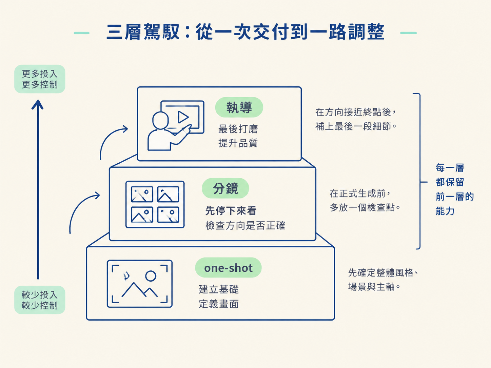
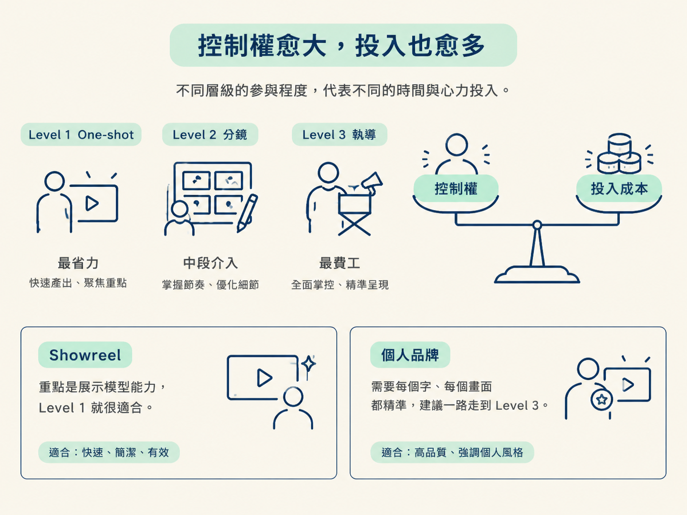

你會認識 one-shot、分鏡與執導這三種駕馭方式，並能用兩個問題判斷任務適合哪一層：你在什麼時候第一次看到成果？這個任務需要多少控制？
想像你打開 Claude Code，資料夾裡已經放好 logo 和幾張截圖，接著輸入：「幫我做一支 15 秒的動態圖像影片。」
接下來可能有兩種結果。第一種是它跑完，你看了成品覺得不錯，直接收工。第二種是等到影片做完，你才發現整個方向都錯了，只好重新來過。
同樣的工具、同樣的模型，甚至看起來差不多的 prompt，為什麼結果會差這麼多？這通常跟運氣無關，差別在你選了哪一種「駕馭層級」。
這裡的駕馭，指的是你怎麼替 AI 設定方向，以及你打算在什麼時間點介入。有時候，你把任務交出去，等最後結果出爐；有時候，你會先看路線圖，再讓它出發；也有時候，影片已經做出來了，你還會一路看、一邊調整。
這三種方式就像開車時的三種介入程度：放手讓車自己開、出發前先確認導航，或是上路後還不斷修正方向。本課先把這張地圖畫清楚，讓你之後遇到任何任務，都知道自己目前站在哪裡。
三個層級由左到右，代表你投入的力氣愈來愈多，也換來愈大的控制權：
這三層會一層一層疊上去，彼此並不互斥。每一層都保留前一層的能力。
分鏡沒有把 one-shot 拋掉，只是在正式生成前多放一個「先停下來看」的檢查點。執導也是接著分鏡往下做，把方向帶到接近終點後，再補上最後一段打磨。

三個層級其實都在回答同一個問題：我什麼時候第一次看到成果？
這個時間點很重要，因為它會影響你需要投入多少成本，也會決定走偏時要付出多少代價。
| 層級 | 一句話 | 最適合 | 你何時看到它 |
|---|---|---|---|
| Level 1 one-shot |
送出一個 prompt，直接拿到不錯的結果 | 測試每個新模型、製作作品集用的 showreel，以及可重複使用的元素 | 完成時 |
| Level 2 分鏡 |
Claude 先做分鏡，你留言確認後，它才生成 | 你已經知道自己希望影片大致長什麼樣子 | 生成前，以 still 和每幕會發生什麼事的形式看到 |
| Level 3 執導 |
針對已經做出的影片提供回饋 | 最後 10 到 20% 的打磨，例如畫面、聲音與剪點 | 看到真正的影片，逐秒檢查 |
也可以把它記成三個畫面：
三層無關「哪一層最好」，是一道「你願意花多少力氣，換多少控制權」的取捨。
Level 1 最省事，但你也等於用一句話交出所有決定權。如果方向走偏，通常要等到成品完成後才發現，補救起來比較困難。
Level 2 讓你在大約三分之一的路程時就能介入。你還沒等整支影片做完，就能先確認每一幕的方向，避免最後才發現整體走錯。
Level 3 最費工，但它能處理分鏡無法完全呈現的細節，例如聲音與剪點。這些問題往往要等真正的影片播放起來，才會一秒一秒地浮現。
所以，層級愈高，代表這個任務愈需要你親自參與，跟厲不厲害無關。一支只是拿來展示模型能力的 showreel，使用 Level 1 可能就很剛好；但如果影片要放進個人品牌，而且每個字、每個畫面都要精準，你就會想一路走到 Level 3。

三層是同一條路上逐步加深的介入。判斷方式只有一個：你什麼時候第一次看到成果。做完才看到，代表 Level 1；生成前先看到 still，代表 Level 2；對著成品一秒一秒檢查，代表 Level 3。每一層都保留前一層，不是三選一。
現在，整張地圖已經畫好了。接下來我們從最左邊的 Level 1 開始實際操作：送出那一行 one-shot prompt，看看 Opus 5.5 在你幾乎沒有額外指定的情況下，自己選了哪些工具、做出了什麼結果，以及為什麼這一層雖然到不了生產級，仍然值得先跑一次。